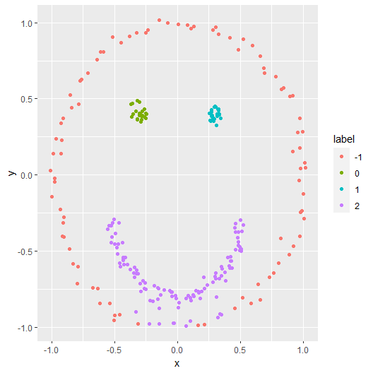

DBSCAN은..
DBSCAN (Density-Based Spatial Clustering of Applications with Noise)은 밀도 기반의 클러스터링 알고리즘 중 하나로, 1996년에 Martin Ester, Hans-Peter Kriegel, Jörg Sander, Xiaowei Xu에 의해 제안되었습니다. DBSCAN은 밀도 기반의 클러스터링을 수행하기 때문에 클러스터의 모양이 원형이 아닌 경우에도 유연하게 적용할 수 있으며, 노이즈를 포함한 데이터에 대해서도 강인한 성능을 보입니다.
DBSCAN 알고리즘은 다음과 같은 주요 개념을 활용합니다:
- 이웃 반경(epsilon, ε): 데이터 포인트에서 주어진 거리 내에 있는 이웃 포인트를 찾는 데 사용되는 거리입니다.
- 최소 포인트(MinPts): 밀집 영역이라고 간주되기 위해 주어진 이웃 반경 내에 존재해야 하는 포인트의 최소 개수입니다.
알고리즘의 동작 방식은 다음과 같습니다:
- 데이터셋 내의 모든 포인트를 순회하며, 아직 클러스터에 할당되지 않은 포인트를 선택합니다.
- 선택한 포인트에서 epsilon 거리 이내의 이웃 포인트를 찾습니다.
- 이웃 포인트의 수가 MinPts 이상이면, 새로운 클러스터를 생성하고 해당 포인트와 그 이웃들을 해당 클러스터에 할당합니다.
- 이웃 포인트의 이웃들을 또한 순회하며, MinPts 이상의 이웃을 가지고 있는 포인트를 발견하면 해당 클러스터에 추가합니다. 이 과정을 반복하여 클러스터가 더 이상 확장되지 않을 때까지 수행합니다.
- 모든 포인트를 순회할 때까지 1-4 단계를 반복합니다. 이 과정이 끝나면 클러스터가 생성되며, 어떠한 클러스터에도 속하지 않는 포인트는 노이즈로 간주됩니다.
DBSCAN의 주요 장점은 클러스터의 개수를 사전에 지정할 필요가 없으며, 클러스터의 모양에 대한 가정이 없어 다양한 형태의 클러스터를 찾을 수 있다는 점입니다. 또한, 이 알고리즘은 노이즈를 구분하여 클러스터링에 영향을 미치지 않게 처리할 수 있습니다. 단점으로는 높은 차원의 데이터에 대한 성능 저하가 있으며, epsilon과 MinPts와 같은 하이퍼파라미터를 선택하는 것이 어려울 수 있다는 점입니다.
DBSCAN 예시
library(tidyverse)
library(reticulate)
# Get Smile Data
circle_df <- data.frame(
t = seq(0, 2 * pi, length.out = 100),
x = 0,
y = 0,
r = 1
)
circle_df$x <- circle_df$r * cos(circle_df$t) + rnorm(100,0,0.03)
circle_df$y <- circle_df$r * sin(circle_df$t) + rnorm(100,0,0.03)
eyes_df <- data.frame(
x = rep(c(-0.3, 0.3),50) + rnorm(50,0,0.03),
y = rep(c(0.4, 0.4),50) + rnorm(50,0,0.03)
)
mouth_df <- data.frame(
t = seq(-pi, 0, length.out = 100),
x = 0,
y = -0.3,
r = 0.5
)
mouth_df$x <- mouth_df$r * cos(mouth_df$t) + rnorm(100,0,0.03)
mouth_df$y <- mouth_df$y + mouth_df$r * sin(mouth_df$t) + rnorm(100,0,0.03)
smile_df <- rbind(circle_df[,2:3],eyes_df,mouth_df[,2:3])# Run DBSCAN
import numpy as np
from sklearn.cluster import DBSCAN
X = r.smile_df
dbscan = DBSCAN(eps=0.15, min_samples=10)
dbscan.fit(X)
labels = dbscan.labels_
labels# Plot result
smile_df <- smile_df |> mutate(label = as.factor(py$labels))
ggplot(smile_df,aes(x = x, y = y, color = label)) + geom_point()